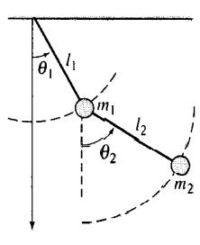

Práctica 8: Simulink
Contents
Simulink
Para un panorama general de saber que es SIMULINK revise el siguiente video
En particular nos concentraremos en simular solución de ecuaciones diferenciales. Para activar Simulink podemos hacerlo por lo menos de dos maneras, con comando
o dando click en el icono ubicado en la pestaña de HOME

Dependiendo de la versión que se utilice podría o no aparecer la siguiente ventana. En caso de que aprezca seleccionamos la opción de Blank Model
de ser necesario seleccionamos el icono mostrado para que aparezca la Simulink Library Browser

Ahora se presentan algunos ejemplos utilizando simulink, implemente las simulaciones que se muestran en los videos y comparelas.
Entregables
Para las siguientes ecuaciones obtenga

- La solución analítica mediante transformada de Laplace
- La gráfica de la solución analítica, puede presentar diferentes intervalos en la grafica y acercamientos a la gráfica según considere necesario.
- El diagrama de la realización elegida para SImulink, indicando, en caso de que no sea claro, el valor de cada parámetro en Simulink, por ejemplo, reportar las condiciones Iniciales de simulación ya que no son visibles a simple vista desde el esquema de realización.
- La grafica de la solución en Simulink, puede presentar diferentes intervalos en la grafica y acercamientos a la gráfica según considere necesario.
- La gráfica, en la misma figura, de la Simulación y la solución analítica.
- En caso de que la entrada sea una función senoidal: * Encuentre el escalamiento y desfasamiento de la respuesta forzada a partir de la evaluación de la función de transferencia (solución analítica). * Encuentre el escalamiento y desfasamiento de la respuesta forzada a partir de las gráficas de Bode generadas en Matlab (solución numérica). * Verifique que concuerde la solución analítica y la solución numérica
- Conclusiones en caso de que considere necesario realizar comentarios al respecto.
Simulación
Un péndulo doble oscila en un plano vertical bajo la acción de la gravedad. Para desplazamientos pequeños y , es posible demostrar que las ecuaciones diferenciales del movimiento (para ángulos pequeños) son:
Resuelva el sistema con simulink y de forma simbolica con MATLAB con: , , ,  ,
,  , .
, .

Puedes consultar el siguiente documento para la solución símbolica enlace
Reporte los esquemas de implementación y la gráfica de las soluciones.